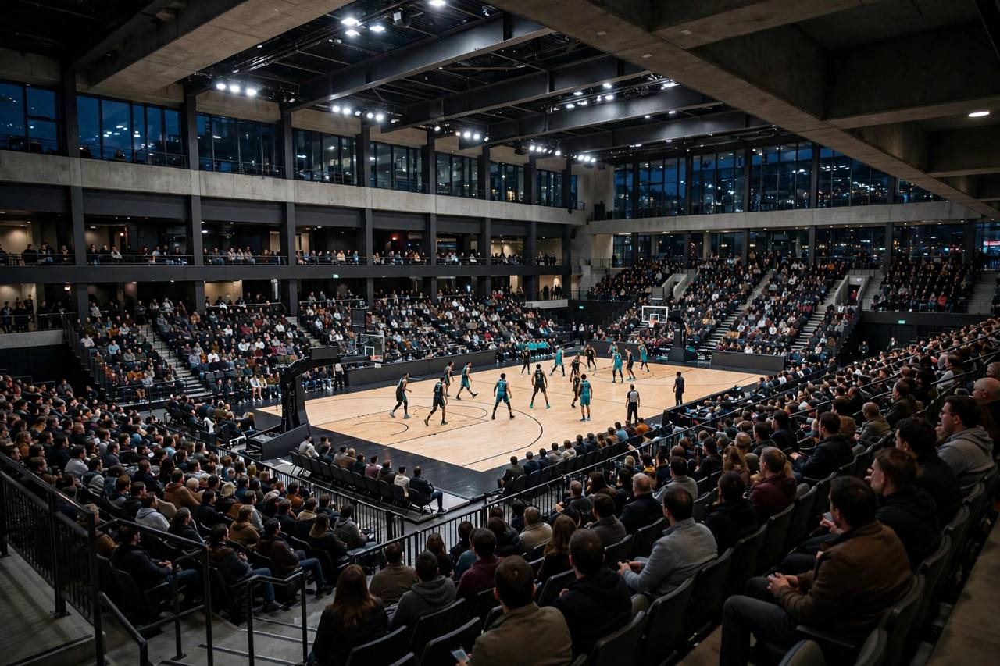

एलन ने 21 अंक बनाए, रीड ने हॉर्नेट्स इतिहास रचा, नेट्स पर 110-103 की जीत
ग्रेसन एलन ने बेंच से 21 अंक बनाए और नाज़ रीड ने शार्लोट के लिए अपने पहले मैच में 20 अंक, 11 रिबाउंड और सात असिस्ट किए, हॉर्नेट्स ने ब्रुकलिन नेट्स को 110-103 से हराया।

मुख्य बिंदु
- शार्लोट हॉर्नेट्स ने बुधवार रात बार्कलेज़ सेंटर में ब्रुकलिन नेट्स को 110-103 से हराकर सीज़न की शुरुआत की, और गर्मियों में आए दो बड़े खिलाड़ियों ने ज़्यादातर काम किया। ग्रेसन एलन ने बेंच से 21 अंक…
- रीड टीम के लिए पहले मैच में कम से कम 20 अंक, 10 रिबाउंड और पांच असिस्ट करने वाले हॉर्नेट्स इतिहास के पहले खिलाड़ी बने, हॉर्नेट्स के अनुसार। शार्लोट ने उन्हें उस सौदे में मिनेसोटा से लिया था जिसमें…
- माइल्स ब्रिजेस के सौदे में फीनिक्स से आए एलन ने 9 में से 6 शॉट लगाए और शार्लोट के 15 थ्री पॉइंटरों में से पांच लगाए। उनके 29 मिनट में हॉर्नेट्स ने ब्रुकलिन को 20 अंक से पीछे छोड़ा। घायल कोबी…
शार्लोट हॉर्नेट्स ने बुधवार रात बार्कलेज़ सेंटर में ब्रुकलिन नेट्स को 110-103 से हराकर सीज़न की शुरुआत की, और गर्मियों में आए दो बड़े खिलाड़ियों ने ज़्यादातर काम किया। ग्रेसन एलन ने बेंच से 21 अंक बनाए और नाज़ रीड ने शार्लोट के लिए पहले मैच में 20 अंक, 11 रिबाउंड और सात असिस्ट के साथ खेल खत्म किया।
रीड टीम के लिए पहले मैच में कम से कम 20 अंक, 10 रिबाउंड और पांच असिस्ट करने वाले हॉर्नेट्स इतिहास के पहले खिलाड़ी बने, हॉर्नेट्स के अनुसार। शार्लोट ने उन्हें उस सौदे में मिनेसोटा से लिया था जिसमें लामेलो बॉल टिम्बरवॉल्व्स गए थे। रीड ने 18 में से 8 शॉट लगाए, जिनमें 10 में से 4 थ्री पॉइंटर भी थे, और यह कम से कम 20 अंक और 10 रिबाउंड वाला उनका 17वां मैच था, रॉयटर्स के अनुसार।
शार्लोट के पांच खिलाड़ी 17 अंक तक पहुंचे
माइल्स ब्रिजेस के सौदे में फीनिक्स से आए एलन ने 9 में से 6 शॉट लगाए और शार्लोट के 15 थ्री पॉइंटरों में से पांच लगाए। उनके 29 मिनट में हॉर्नेट्स ने ब्रुकलिन को 20 अंक से पीछे छोड़ा। घायल कोबी व्हाइट की जगह शुरुआत करने वाले डेनिस श्रोडर ने अपनी 12वीं NBA टीम के लिए पहले मैच में 19 अंक और छह असिस्ट जोड़े। ब्रैंडन मिलर ने 18 अंक बनाए और मूसा डायबाटे ने 17 अंक, आठ रिबाउंड और पांच स्टील जोड़े।
मिलर ने पहले क्वार्टर में 12 अंक बनाए, जिनमें लगातार आठ भी थे, और शार्लोट ने 27-23 की बढ़त ली। हॉर्नेट्स दूसरे क्वार्टर में नौ अंक आगे तक गया और डायबाटे के हाफ से 1.2 सेकंड पहले लगाए लेअप के बाद 54-48 से आगे हाफटाइम में गया।
रैंडल और पोर्टर काफ़ी नहीं रहे
जूलियस रैंडल ने ब्रुकलिन के लिए अपने पहले मैच में सबसे ज़्यादा 33 अंक बनाए, साथ में आठ रिबाउंड और सात असिस्ट भी किए। माइकल पोर्टर जूनियर ने 26 अंक और सात रिबाउंड के साथ खेल खत्म किया। नेट्स में दोहरे अंक तक पहुंचने वाले वे ही दो खिलाड़ी थे। ब्रुकलिन ने 45 प्रतिशत शॉट लगाए और 31 में से 12 थ्री पॉइंटर लगाए, लेकिन शार्लोट से 12 शॉट कम लिए, 20 दूसरे मौके के अंक दिए और 22 बार गेंद गंवाई।
ब्रुकलिन ने तीसरे क्वार्टर की शुरुआत में दबाव बनाया। डायबाटे ने तीन अंक के खेल से 10 अंक की बढ़त खोली और नेट्स ने लगातार 12 अंक से जवाब दिया। पोर्टर ने तीसरे क्वार्टर में 8 मिनट 12 सेकंड बाकी रहते चार अंक के खेल से ब्रुकलिन को 64-62 आगे किया। शार्लोट संभला, तीन क्वार्टर के बाद 86-81 आगे रहा और चौथे में जीत पक्की की।
इसका मतलब
यह हार 17,548 दर्शकों के सामने ब्रुकलिन की सीज़न के पहले मैच में लगातार छठी हार थी, न्यूयॉर्क पोस्ट के अनुसार। शार्लोट ने पिछले सीज़न शार्लोट में 136-117 की जीत के बाद लगातार दूसरे साल शुरुआती मैच में नेट्स को हराया है। हॉर्नेट्स 1-0 के साथ घर लौटता है। ब्रुकलिन 0-1 है और कठिन कार्यक्रम में पहली जीत खोजेगा।
स्रोत
रॉयटर्स, न्यूयॉर्क पोस्ट, USA Today Rookie Wire और Sportradar का बॉक्स स्कोर, अंग्रेज़ी संस्करण में लिंक किए गए।
टाइमलाइन
- Oct 21, 2026ब्रैंडन मिलर ने पहले क्वार्टर में 12 अंक बनाए, जिनमें लगातार आठ भी थे, और शार्लोट ने 27-23 की बढ़त ली।
- Oct 21, 2026मूसा डायबाटे ने पहले हाफ से 1.2 सेकंड पहले लेअप लगाया और शार्लोट 54-48 से आगे हो गया।
- Oct 21, 2026शार्लोट ने बार्कलेज़ सेंटर में 110-103 से जीत दर्ज की, ब्रुकलिन पर लगातार दूसरी शुरुआती जीत।
स्रोत
- Reuters: Grayson Allen, Naz Reid power Hornets past Nets
- New York Post: Nets fall to shorthanded Hornets for sixth straight season-opening loss
- USA Today Rookie Wire: Well-rounded effort leads Hornets to an opening night victory over Brooklyn
- Sportradar: Brooklyn Nets vs Charlotte Hornets final box score, Oct 21 2026